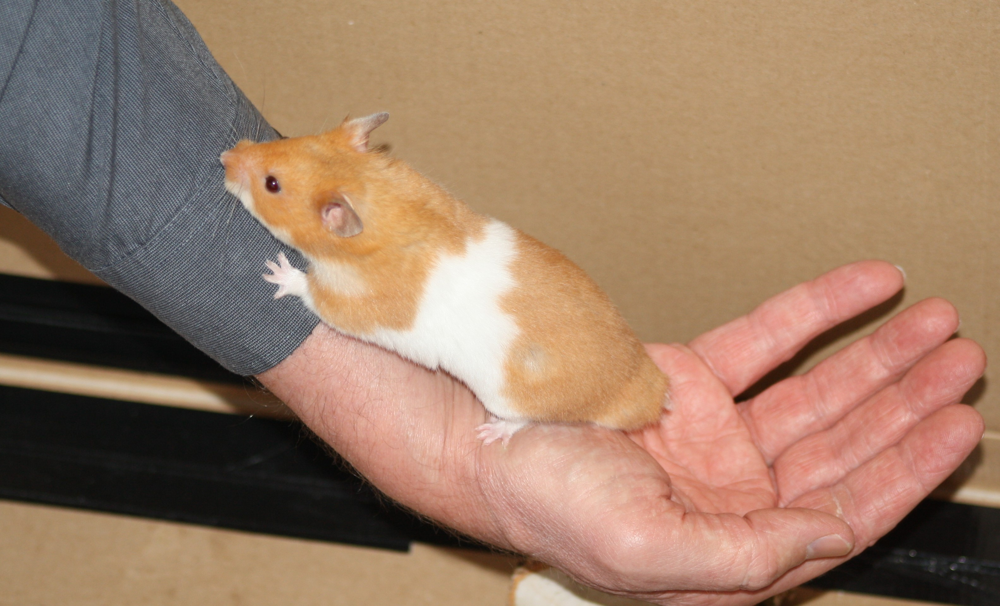

01-Jun-2017 | Milku
to start doing randomly wild things.
It's time to start 30 Days Wild.
While we've been waiting for June to start, we've found lots of ideas for things to do in an RSPB book, published by Dorling Kindersley, called 365 Outdoor Activities You Have To Try. As we work our way through our chosen tasks, we're going to share our progress with you here.
So my little blog is being overrun by humans for a month. Don't fret though. I retain editorial control so you can be sure that I'll keep you up to date with things that are happening in Blackpool and anything of concern to hamsters in general. Normal service will resume in July.
Well, it wasn't hard to choose the first activity. My little humans came home with muddy boots after a spending a couple of days at a We Are Adventurers holiday club. Actually, the boots weren't the only things that were filthy...one of them couldn't get the mud and camouflage paint off herself after the first day so had a head start on day 2! Anyway, they decided to put the mud to good use by trying to complete activity number 101 in the book: germinating seed hitchhikers.
We sterilised a container full of compost…30 minutes in an oven at 100C…to ensure that it wouldn’t contain any seeds that could still grow. We put it into a seed tray and then we waited for some dirty wellies.
The We Are Adventurers holiday club takes place at a nearby woodland where there are lots of interesting trees and plants growing. The idea was that as the girls roamed through the woods they’d collect seeds in the soles of their wellies. The fact that it had rained recently meant that there were patches of mud around to help the seeds stick to the boots. Rather than hosing off all the mud when they arrived home, the girls carefully scraped the dirt off their boots onto the tray of compost.
They’re hoping that a variety of little seedlings will sprout, but whether we’ll be able to identify what they are is another matter. I wonder if there are any edible plants growing at the Scout Headquarters…
Check back later in the month when we'll tell you whether anything has grown.